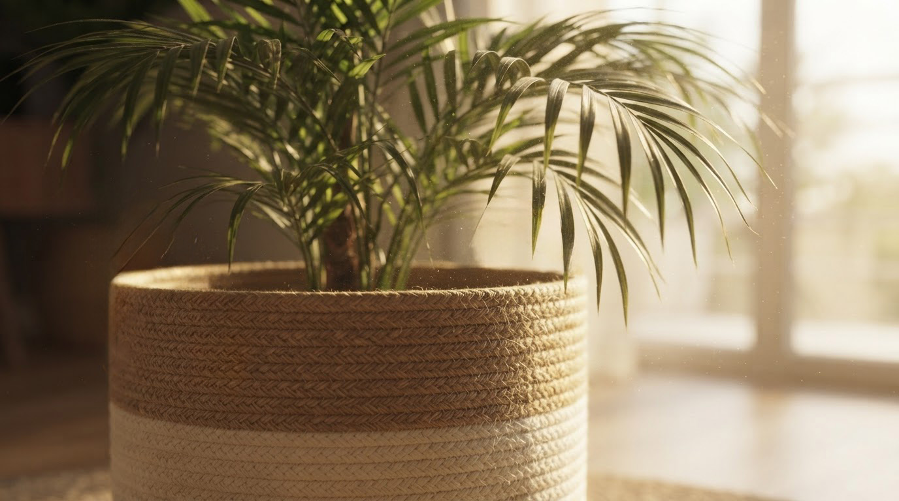

Cesteria artigianale · Corda di cotone
just made for you
materia · gesto · identità
Comincia sempre con una corda. La arrotolo in spirale e la cucio a mano, un giro dopo l'altro — è cesteria, la tecnica con cui nasce ogni pezzo Panenka. Niente stampi, niente serie: solo mani e tempo. Pensato per durare più di una stagione.

Chi sono
Mi chiamo Gabi, e Panenka è nata da una svolta.
Sono nata a Buenos Aires e cresciuta tra economia e amministrazione — tutt'altro mondo. Vivo in Ticino dal 2015, sono mamma di quattro figli, e per anni ho lavorato altrove: design, arredo bagno, moda.
Poi, nel 2023, dopo un periodo difficile, ho sentito il bisogno di tornare a qualcosa di mio. Ho comprato la mia prima macchina da cucire senza sapere bene cosa ne sarebbe uscito. Corsi, prove, errori — e alla fine la cesteria: si parte da un cerchio, si avvolge una corda in spirale, e piano piano diventa un oggetto.
Per me non è solo una tecnica. È quasi una metafora di come vanno le cose: un cerchio che si chiude e se ne riapre un altro, la spirale imprevedibile della vita.
Così, nel 2025, è nata Panenka. Da un cerchio che diventa oggetto. Da chi crede che a volte, per trovare la propria strada, bisogna prima perdersi un po'.
Catalogo
Quello che creiamo
Una selezione delle linee che lavoriamo con corda di cotone naturale.
Il processo
Dalla corda all'oggetto
Un cerchio, una spirale, un punto alla volta — sempre a mano, sempre un pezzo per volta.
Il materiale
Si parte da una corda: cotone al 90%, con un'anima interna che le dà struttura. Arriva dalla Spagna. Fibbie, fondi e altri dettagli sono quasi tutti italiani.
La cesteria
Un cerchio, una spirale, punto a zigzag — a mano, un pezzo alla volta. La corda va tenuta alla giusta tensione: se è troppo lenta il pezzo perde forma, se è troppo tesa perde morbidezza. Si impara facendo, sbagliando, ricominciando.
Niente produzione in serie
Ogni pezzo nasce da capo, e nessuno è davvero identico a un altro. Ceste, tappeti, contenitori, borse, borsellini, portachiavi: stessa tecnica, forme diverse. Ognuno racconta la stessa storia, a modo suo.
Materia prima
La corda di cotone, nel suo colore più naturale
Una palette terrosa che si adatta a qualsiasi spazio, dal più sobrio al più luminoso.
Caffè Espresso
Profondità ed eleganza sobria
Beige Sabbia
La calma del fatto a mano
Terracotta Argilla
Un accento caldo e vicino
Verde Oliva Secco
Una sfumatura organica e serena
Fiducia
Chi già lavora con Panenka
Non sono parole mie — sono di chi ha già messo un pezzo nel proprio spazio e ha notato la differenza.
"La rifinitura a mano si nota dal primo pezzo. Panenka ha capito esattamente il tono che cercavamo per il progetto."
— Studio di interior design, Lugano"Produzione curata, tempi chiari e una comunicazione diretta fin dal primo incontro. Esattamente quello che cercavamo."
— Concept store per la casaParliamone?
Prenota un incontro con Panenka
Non serve avere già tutto chiaro. Raccontami cosa stai immaginando: fissiamo una chiamata di 20 minuti per dare materia, gesto e identità al tuo progetto.
- Risposta in meno di 48 ore
- Campione fisico prima di produrre
- Produzione artigianale su misura